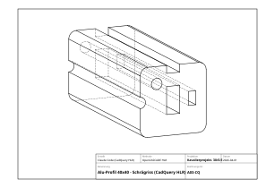

Manuell (unvollständig):

Kavalierprojektion, 30°, Verkürzung 0.5. Schrittweiser Aufbau der Verbindungskanten.
Nur die beiden Schnittflächen (Profil-Querschnitt vorn und hinten). Erster Versuch mit 45° und 966 Verbindungslinien → unlesbares Chaos. Zurückgesetzt, Winkel auf 30° geändert.
Die äußersten sichtbaren Verbindungslinien liegen an den Tangentenpunkten der R4.5-Rundung in 30°-Blickrichtung.
8 Kanten an den Nut-Öffnungen (je 2 pro Nut). Oben+rechts sichtbar, unten+links verdeckt.
Korrektur: Die Kanten beginnen nicht am alten Eckpunkt (4, -20), sondern am R2-Tangentenpunkt (4, -18), weil die R2-Rundung die Ecke ersetzt.
Auf der Hinterseite: gerade Strecken von R4.5-Ende bis R2-Tangentenpunkt. Oben+rechts durchgezogen, unten+links gestrichelt.
Die R2-Rundung bei B ist eine Zylinderfläche (kein Kantenverlauf). Die Silhouettenlinie dieser Fläche beginnt am Tangentenpunkt, wo die Blickrichtung (30°) den R2-Kreis tangiert.
Auf der Hinterseite sichtbar:
An den linken (L) und rechten (V) Nut-Eintrittskanten:
Der Schrägriss eines komplexen Profils erfordert für jede Zylinderfläche (Rundung) eine Silhouettenanalyse: Wo tangiert die Blickrichtung den Kreisbogen? Dieser Tangentenpunkt bestimmt, wo die Silhouettenlinie beginnt und ob/wo sie sichtbar oder verdeckt ist.
Die KI berechnet dies analytisch (Vektorrechnung), ein Zeichner konstruiert es mit Lot auf die Blickrichtung vom Kreismittelpunkt. Das Ergebnis ist identisch.
Nach ca. 15 Iterationen (H, H', Umhüllende, Nut-Eintrittskanten, B-Tangentenpunkte, R2-Bögen, L-Silhouette, V-Korrektur, X-Schnittpunkt...) wurde klar: der manuelle Kante-für-Kante-Ansatz ist bei diesem Profil nicht praktikabel.
Das Problem: jede R2- und R4.5-Rundung erzeugt eine Zylinderfläche. Für jede Zylinderfläche muss:
Bei 8 Nuten × je 2 R2-Rundungen + 4 R4.5-Ecken + innere Hinterschnitt-Bögen ergeben sich über 40 Silhouettenlinien, die alle einzeln berechnet und auf Sichtbarkeit geprüft werden müssen.
Der Mensch fragte: „Hast du irgendeine Idee, wie wir das automatisiert schneller herkriegen?“
Der SVG/Shapely-Ansatz (2D-Geometrie + manuelle Projektion) stößt beim Schrägriss an seine Grenzen. Was fehlt ist eine automatische Sichtbarkeitsanalyse (Hidden Line Removal), die nur ein echtes 3D-CAD-System leisten kann.
Lösungsansatz: CadQuery (Python-basiertes 3D-CAD mit OpenCASCADE-Kernel) kann aus einem 3D-Solid automatisch Projektionen mit korrekter Sichtbarkeit erzeugen. Installation und Test laufen.
Ansatz: Statt manuell Kante für Kante aufzubauen, wird das Profil als echtes 3D-Solid in CadQuery (OpenCASCADE-Kernel) modelliert und dann per Hidden Line Removal (HLR) automatisch projiziert.
CadQuery 2.7.0 installiert. HLR-Module (HLRBRep_Algo, HLRAlgo_Projector) verfügbar.
Die alte manuelle Version bleibt als aufgabe03_risse.py erhalten.
Der neue Versuch wird als aufgabe03_cadquery.py angelegt.
Aufgabe 06: Tool-Vergleich — Drei CAD-Tools parallel getestet:
| Tool | Kernel | HLR | Status |
|---|---|---|---|
| CadQuery 2.7 | OpenCASCADE | ✓ | STEP OK, SVG-Export problematisch |
| build123d | OpenCASCADE | ✓ | Installiert, API-Syntax anders |
| SolidPython2 | OpenSCAD (CSG) | ✗ | SCAD OK, kein HLR |
FAIL: Die HLR-Berechnung selbst funktioniert, aber die SVG-Ausgabe ist fehlerhaft. Die Kanten werden nicht korrekt als SVG-Pfade exportiert — „eine unterhaltsame Katastrophe“.

Neuer Ansatz: Zuerst nur das Profil als sauberes CadQuery-SVG exportieren (Querschnitt). Dann schrittweise die Extrusion und HLR-Projektion hinzufügen.
Das Profil wurde parametrisch aufgebaut (40×40, R4.5, T-Nuten, Bohrung, Pockets), auf 100mm extrudiert, und per HLR aus einer Blickrichtung projiziert, die einer Kavalierprojektion bei 30° entspricht.
CadQuery (automatisch):
Manuell (unvollständig):
Der manuelle Ansatz (SVG + Shapely + Vektorrechnung) hat 15+ Iterationen gebraucht und war bei der oberen Seite angekommen. Allein für die Sichtbarkeitsanalyse der Zylinderflächen-Silhouetten brauchte jede Rundung 3-4 Korrekturschritte.
CadQuery mit OpenCASCADE HLR löst dasselbe Problem in einem Befehl. Die Lektion: Das richtige Werkzeug für die Aufgabe wählen ist wichtiger als jedes Detail perfekt manuell zu konstruieren.
Für das Referat: KI + richtiges 3D-Tool = mächtige Kombination. KI + falsches Tool = mühsam und fehleranfällig.